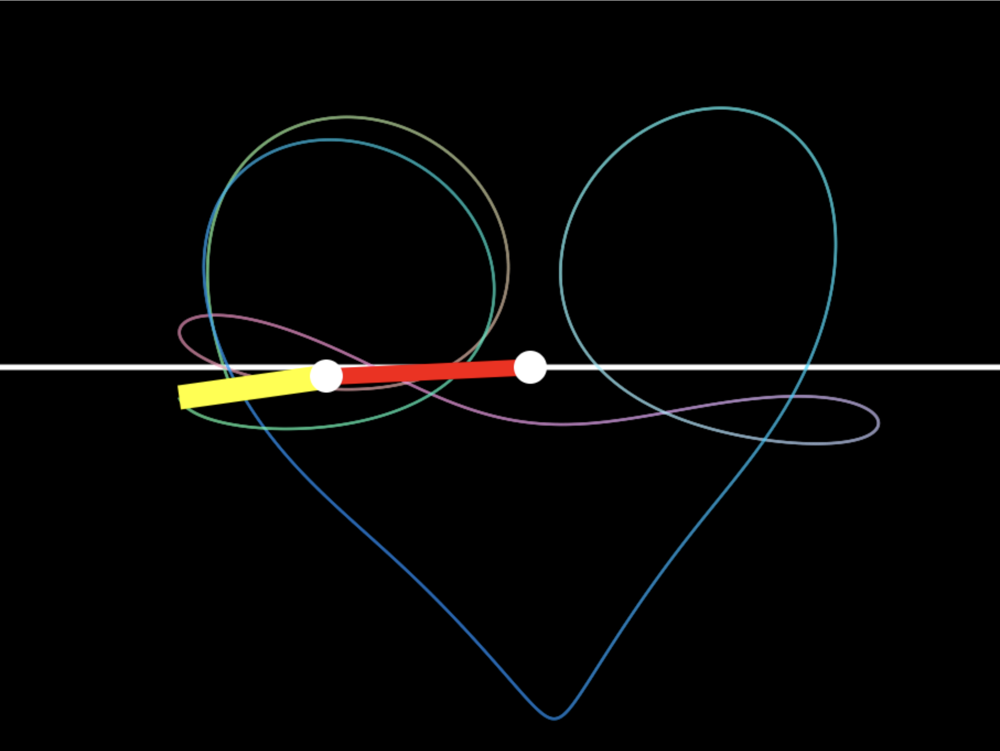
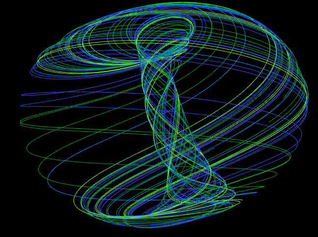
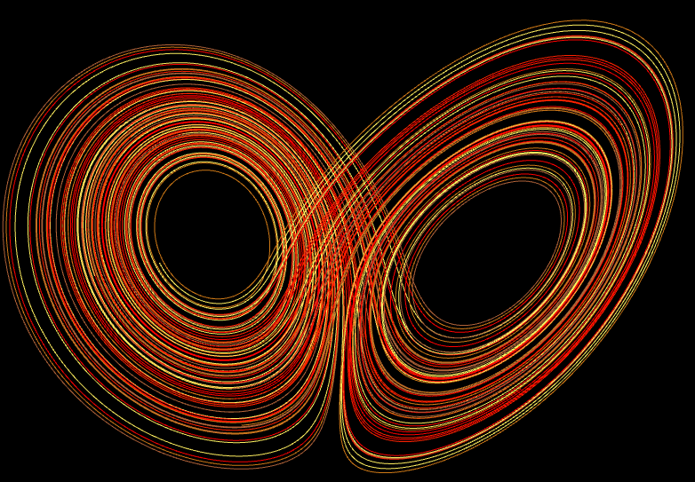

Mathematical Visualization
Exploring the geometry of chaotic systems and dynamical manifolds.
Lorenz Attractor
Aizawa Strange Attractor
Chen-Lee Attractor
Three-Scroll Attractor
Rössler System
Newton-Leipnik System
Dequan Li System
Halvorsen System
Phase Space Renderings

Geometry of a "Heart" emerging from chaotic trajectories

High-Order Symmetry in an Aizawa Manifold

Lorenz System - Orthographic Projection